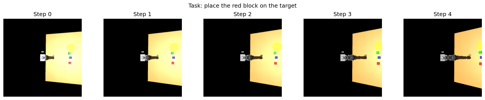
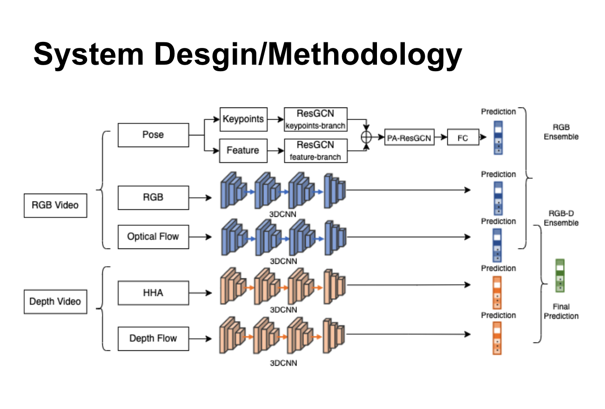
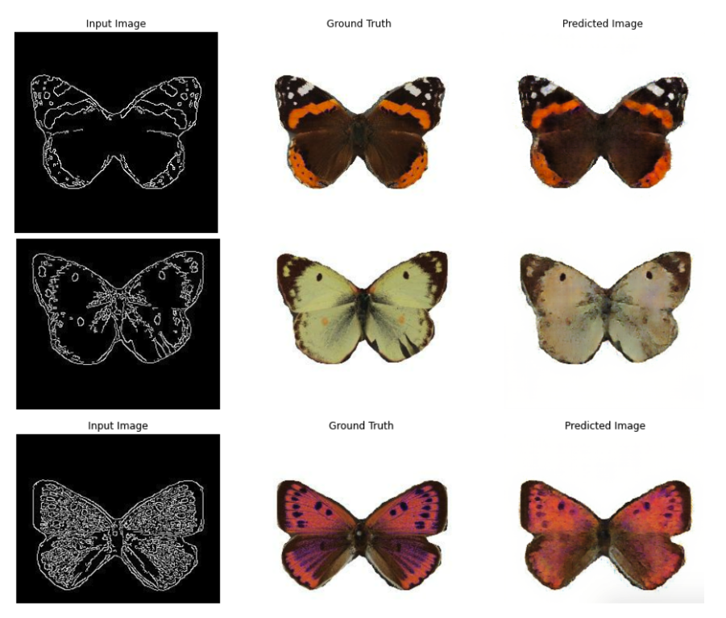
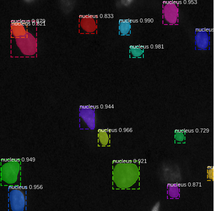
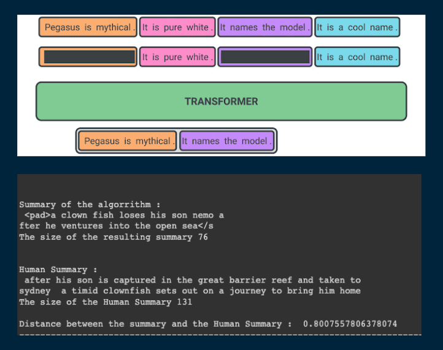
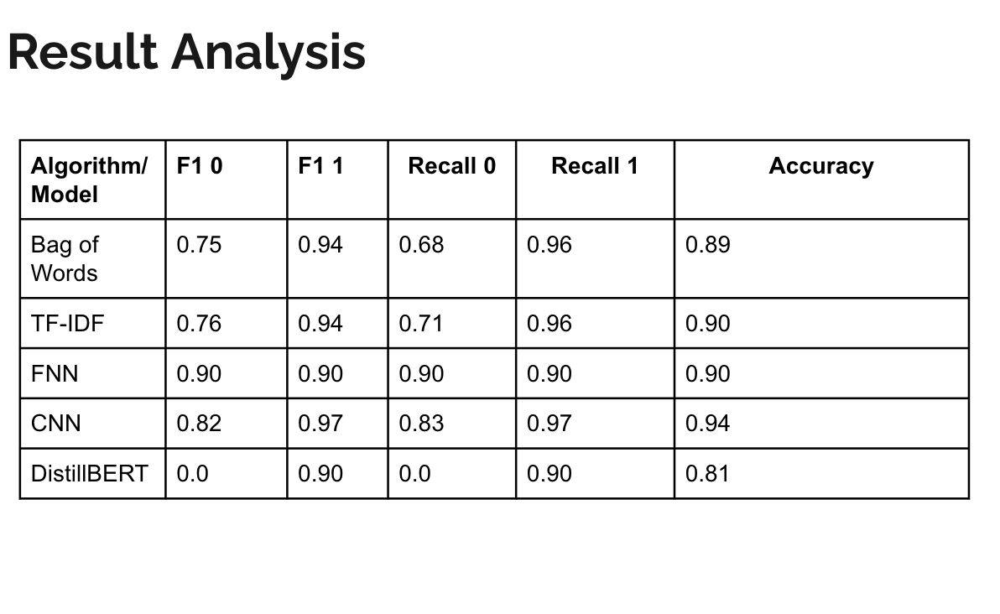
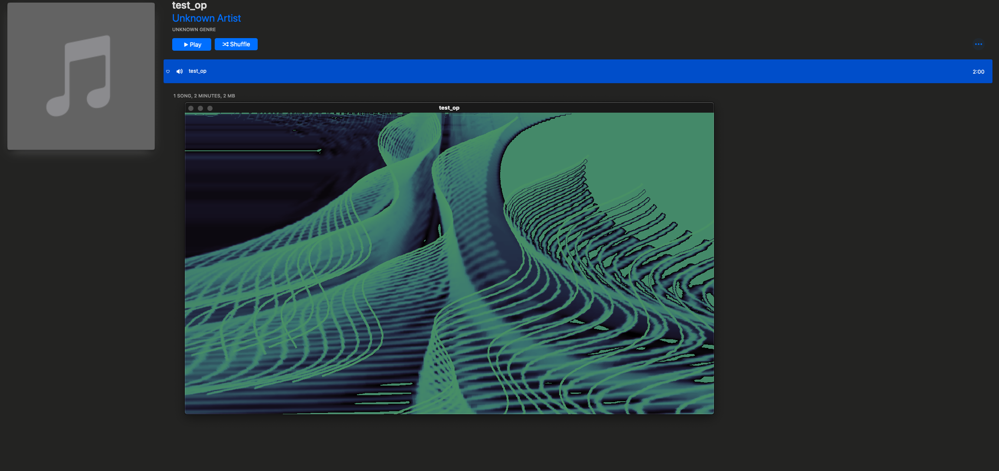

Projects
LLM Evaluation Playground
An interactive, open-source playground for learning LLM evaluation by doing structured like Brilliant, built around the tools that actually run in production. Covers RAG evaluation with RAGAS, human-in-the-loop feedback with Argilla, regression gating and LLM-as-judge with DeepEval and Inspect AI, and preference learning with TRL. The architectural bet: real eval is learnable if you show the decision points, not just the framework docs.
Recent Work

Multi-Task Robot Learning
I combined an EfficientNet-B0 vision encoder, DistilBERT, and cross-attention fusion into a 77M-parameter model that maps camera frames and natural-language instructions to robot manipulation actions — cross-attention rather than concatenation forces the model to align visual and language representations before acting. Multi-task behavior cloning across pick, push, and place tasks cut training loss 22% over single-task training.
Read MoreEarlier Projects

Continuous Sign Language Recognition
My SJSU thesis: extended SAM-SLR for sentence-level continuous sign language recognition by fusing appearance and skeleton keypoint streams. The core challenge was temporal segmentation — identifying sign boundaries within a continuous sequence without explicit markers.

Deep-Q Learning on Continuous Mountain Car
Implemented a DQN agent on OpenAI's continuous mountain car environment — the interesting problem was reward shaping to push the agent past the no-action local minimum where staying still is cheaper than building momentum. Converged in 1,643 episodes.
Read More
Pix2Pix on Butterfly Data
Implemented Pix2Pix (U-Net Generator + PatchGAN Discriminator) for line-art to full-color translation on butterfly images. PatchGAN's patch-level adversarial objective was the key choice — it preserves fine texture detail that a global discriminator loses.
Read More
Mask-RCNN on Nuclei Data
Applied Mask-RCNN to nuclei microscopy segmentation, where instance segmentation matters because individual cell boundaries — not just regions — carry biological meaning. Reached 0.73 mAP on the 2018 Data Science Bowl dataset.
Read More
Abstractive Summarization
Fine-tuned Pegasus on IMDB plot data for abstractive summarization. Pegasus's gap-sentence pre-training made it the right fit over extractive approaches — it generates coherent summaries rather than lifting phrases verbatim from the source.
Read More
Sentiment Analysis on Amazon Reviews
Head-to-head benchmark of FNN, CNN, LSTM, and DistilBERT on Amazon review sentiment classification. DistilBERT outperformed all baselines by a margin that makes the comparison useful as a concrete demonstration of what pre-training actually buys.
Read More
Lo-Fi Music Generation
Trained an LSTM on Lo-Fi music data to generate stylistically consistent sequences. More instructive as an exercise in temporal pattern learning than in the output — the gap between statistically likely next-notes and anything a person would want to hear is significant.
Read More